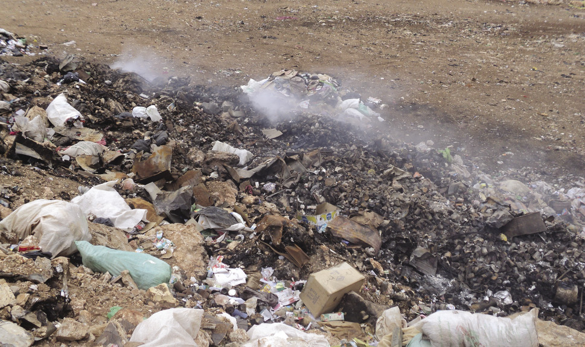
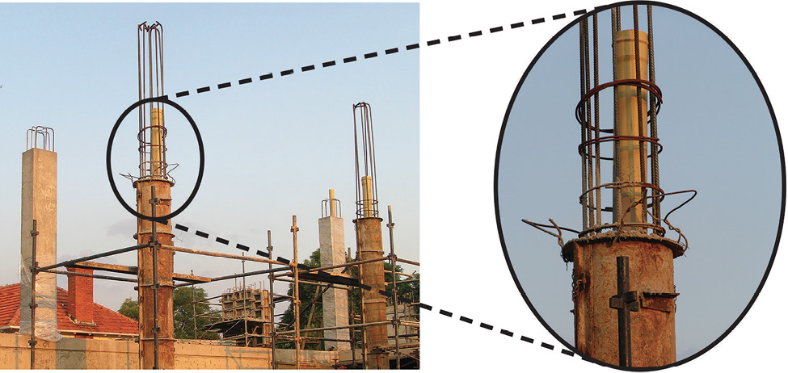
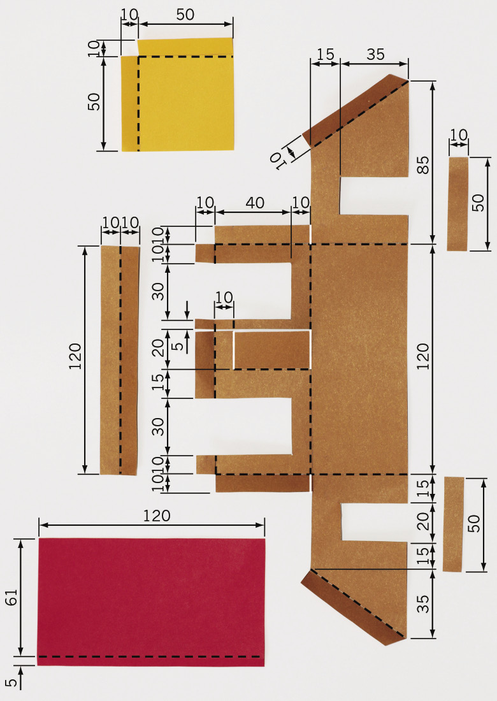
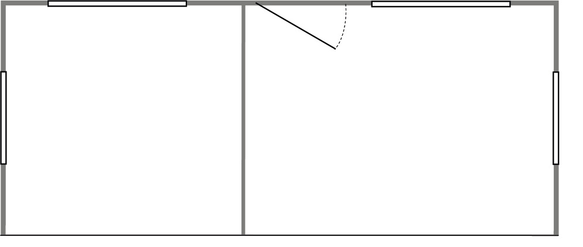

In this chapter, you will learn how plastic waste damages the environment. Then you will learn how this negative impact can be reduced.
8.1 What are things made of? 112
8.2 What happens to things when they are thrown away? 115
8.3 How can you stop people from throwing plastic bags away? 118
Figure 1: What is this swing made of?
Many years ago, people could only use the materials that they found in the natural environment. This means all of the natural things that are around us. It includes air, water, soil, plants and animals. Some examples of natural materials are wood, leather, clay and grass.
Today, people use many new materials that are not found in the natural environment. These materials are made in factories. They are often made from oil or coal that are found under ground. This includes materials like plastic, certain paints, and certain fabrics used to make clothes. You may have heard of "polyester clothes", "PVA paint" and "neoprene rubber". These are called synthetic materials.
Synthetic materials have many advantages. They are often more durable, lighter and cheaper than natural materials. Something is durable if it lasts for a long time.
But synthetic materials also have disadvantages. When they are thrown away, the waste lasts a long time. Therefore, it is better to use synthetic materials over and over again. This is called reusing materials.
Because synthetic materials are cheap, people can afford to buy more things that they want. One of the easiest ways to reduce the disadvantages of synthetic materials is to buy fewer things. This is called reducing consumption. Before you buy something new, ask yourself if you really need it.
There is another disadvantage to synthetic materials that most people do not see. Harmful waste is often formed at the factories where the synthetic materials are made. This waste can end up in the air, the water and the soil. Modern factories are designed better than older factories so that they release less harmful waste into the environment.

coal
water
electricity
synthetic materials
waste gases
liquid waste
solid waste
One good idea is to keep waste of synthetic materials separate from waste of natural materials. This is called waste separation.
Waste of natural materials is broken down in the natural environment to form harmless substances like compost. Some natural materials break up into harmless substances simply when they lie in the sun or in water for some time.
A material is called biodegradable if natural processes can break the material into small harmless pieces.
Materials that cannot break down naturally into harmless substances are called non-biodegradable materials.
Many people throw all their fruit and vegetable peels on a compost heap. They also throw dead leaves, small tree branches and cut grass on it.
Over a few months, the waste on the compost heap changes into small dark pieces that feel like soft soil. This is called compost or humus. Compost is a valuable material, because plants grow better in soil that contains a lot of compost.
A compost heap should be kept wet, warm and filled with air. You can do this by covering the heap with a plastic sheet, and mixing the compost once a week.
freshly added vegetable waste
old vegetable waste that formed compost
Figure 3: A compost heap
8.1 What are things made of?
Look around you at the following objects in your classroom. For each object, do the following:
(a) Write down what you think this type of object was made of hundreds of years ago, before there were synthetic materials.
(b) Write down what this object is made of today.
|
Object |
What was it made of hundreds of years ago? |
What is it made of today? |
|
Shirt |
Hint: Look at the label inside your school shirt. |
|
|
Jersey |
Hint: Look at the label inside your school jersey. |
|
|
Pen |
||
|
Something to write on |
Hint: What did the Egyptians write on? What did the Khoisan draw on? |
|
|
Pencil case |
||
|
Paint |
||
|
Roof |
||
|
School bag |
After you have completed the table, discuss your answers with the learner sitting next to you.
Homework for the next lesson
You need to do these exercises to be able to answer the questions in the next lesson.
1. Look at the contents of dustbins and garbage bags. Make a list of all the solid materials in the waste.
2. Stand in street near your home. Look around you, without walking to another position. Count how many plastic bags you can see. Go to a different street and do the same again. Then complete the table below.
|
Number of plastic bags you can see |
|
|
Street A |
|
|
Street B |
3. Look at plastic bags lying around outside that still look new.
Also look at plastic bags lying around outside that look old.
Why do some plastic bags look new and others old? What made the old ones look that way?
4. Look at new and old pieces of materials made from plants that are lying around, such as wood, cut grass, paper and cardboard. How do the newer pieces of this waste differ from those that have been lying around for a long time?

How do you throw your waste away?
It is good for the environment if you put different kinds of waste in different garbage bags or boxes. This is called waste separation. For example, if you put all your glass waste into a box, then that glass can be taken by a waste collector to a factory that makes new glass bottles out of old glass. This is much better than if the old glass lies on a rubbish heap. We say that glass can be recycled. You will learn more about recycling next week.

Figure 4: The weekly waste from a household that separates waste

Figure 5: The weekly waste from a household that does not separate waste
8.2 What happens to things that are thrown away?
Discuss in groups of three or four
To answer these questions, think back to the homework exercises you did.
1. (a) What are the differences between waste materials that have been lying outside for a long time and those that have been there for a short time?
(b) Which types of materials changed a lot with time? And which types of materials did not?
(c) Do some materials change more with time than others?
2. (a) What do you think will happen to plastic bags that lie in the environment for more than 10 years, or 100 years, or 1 000 years?
(b) Do the plastic bags that are thrown away as waste just get more and more? Or do they biodegrade? Or do they go somewhere else?

Different properties of different materials
Siphosethu uses a paper bag to carry her shopping.
Brandon uses a plastic bag.
Thabang uses a leather bag.
They all reuse their bags, but all of their bags break after some time.
Answer the following questions for each type of bag on your own.
1. What will happen to the bag when it gets wet?
|
Paper bag |
|
|
Plastic bag |
|
|
Leather bag |
2. Do you need to care for the bag in some way so that it will last longer?
|
Paper bag |
|
|
Plastic bag |
|
|
Leather bag |
3. Can the bag be fixed when it breaks? If yes, then how?
|
Paper bag |
|
|
Plastic bag |
|
|
Leather bag |
4. What will happen to the bag if it is thrown away with other waste like rotting food? Where will the bag end up? What will happen to it there?
|
Paper bag |
|
|
Plastic bag |
|
|
Leather bag |

Homework
Think about a place where garbage is burned. You may have seen places like this.

Figure 6: A burning garbage dump
1. What does the ground look like?
2. What does the air look like?
3. What does it smell like?

8.3 How can you stop people from throwing plastic bags away?
Case study: The negative impact of plastic shopping bags on people and the environment
During the past two weeks you have read and experienced a lot about the impact of plastic materials on people and the environment. Think back about this when you answer the following questions.
1. What can happen if an animal eats a plastic bag?
2. (a) What happens to people and animals who breathe in the smoke and gases that comes from burning plastic?
(b) Where do the smoke and gases go after the fire has burnt?
(c) What stays behind on the ground after the plastic was burnt?
3. What does it look like when there are lots of plastic bags lying around your house or school, or in the street, or in the veld?
4. Look at the photo below:

Figure 7
What can happen when plastic bags end up in a river or stream?
5. What happens to plastic if it lies in water for a long time? Does it change?

Report: Reducing the negative impact of plastic bags
Until 2003, South African shops gave customers free plastic bags to carry their shopping. These bags were very thin, and broke easily. This meant that the bags were thrown away after they were used.
Our government wanted to reduce plastic waste. In 2003, it banned supermarkets from giving customers shopping bags for free, and banned the use of very thin plastic shopping bags. These bags are illegal.
Since then, supermarkets ask customers to pay for thicker, stronger shopping bags that can be used over and over again. The bags still look very thin, but they are less thin than the shopping bags used before 2003. Customers can choose not to buy new bags, and rather take old shopping bags with them to the shops.
The new, thicker plastic shopping bags are also easier to recycle by recycling factories. But this only helps if people separate their waste so that the plastic bags can be sent to a recycling factory.
Think back about what you saw when you were looking at the contents of dustbins and garbage bags, and at plastic bags lying around outside. Write a half-page report about this to answer these four questions:
1. Do you think that making people pay for thicker, reusable shopping bags helps to reduce the amount of plastic shopping bags that people throw away?
2. Are some shops still giving away thin plastic shopping bags for free?
3. What percentage of people do you think put their plastic waste separate, and not with their other waste?
4. Are there other things people can do so that less plastic bags are thrown away?

Figure 8: A wind turbine generates electricity by using the force of the blowing wind. The blades of the turbine are made of a synthetic material called "epoxy resin," that is combined with fibres. This makes the blades very strong, but at the same time very light. Also, it is possible to make this material into a special shape.
Next week
Next week you will be working with paper and cardboard in class. Instead of buying new paper and cardboard, you will reuse old paper and cardboard. Gather some paper and cardboard waste over the weekend, and bring it with you to school at the start of next week. Gather things like cardboard packaging for food.
In the following two weeks, you will learn how paper is recycled. You will also learn how to make new objects out of old pieces of cardboard. You will make your own packaging for a product.
9.1 What are paper and cardboard made of? 126
9.2 How are paper and cardboard recycled? 128
9.3 Draw the development of a box 132
9.4 Make your own box 134
9.5 Your final box 136
9.6 Make a pencil case 137
Figure 1: Gathering paper and cardboard waste separate from other waste

Cutting down trees
Making paper and cardboard in a paper factory
Throwing away paper and cardboard
Using paper and cardboard
Paper and cardboard are materials that are biodegradable. They do not damage the environment when they are thrown away. They can also be burnt in order to generate heat or electricity, and no poisonous gases will be given off. But to make paper and cardboard, trees have to be cut off. If paper and cardboard are recycled, fewer trees have to be cut down.
Did you know?
When 54 kg of newspaper is recycled, one less tree has to be cut down.
Almost 40% of municipal solid waste is paper and cardboard.
Returning waste paper and cardboard to the paper factory
Separting waste paper and cardboard from other waste
Did you know?
The average person uses almost 50 kg of paper and cardboard per year.
Poisonous chlorine gas is used to bleach paper. To bleach means to make white. The chlorine can form poisonous gases called dioxins, which can be released into the atmosphere.
9.1 What are paper and cardboard made of?
A paper recycling factory makes new paper or cardboard out of waste paper. The way this is done is explained below. You can also make recycled paper at home.
1. Waste paper is mixed with warm water and chemicals. It is stirred and chopped up by a machine to separate the thin little fibres the paper is made of. The machine that stirs and chops up the mixture of paper and water, works like a food blender.
The mixture of chopped-up paper and water is called paper pulp.

Figure 4
2. The pulp is poured through a sieve. Old glue and fibres that are very short pass through the sieve. Long, strong fibres remain on top. These fibres then go to a stirred tank where chemicals are added to remove ink from the pulp.
3. New glue is added to the pulp. Some clay is also added if the recycled paper will be used for writing or printing, because the clay gives the paper a smoother surface.
4. The pulp goes to a paper-making machine, where it is pressed between two rollers to give it the required thickness, and to squeeze out water.
Figure 5: A sieve
Instead of waiting a long time for the paper to dry, it is dried more quickly by heating it and blowing hot air over it. Once the paper is dry, it is cut into the necessary size and packaged.
Paper fibres can be recycled as many as seven times. But each time it is recycled, the fibres get broken into shorter and shorter fibres. If it is recycled too many times, the fibres become too short and weak to use for making paper again.

Case study: Paper recycling
1. What is cardboard made of?
2. Why can paper not be recycled more than seven times?
3. What will happen when the holes of the sieve are too big?
4. What will happen when the holes of the sieve are too small?

Homework for the next lesson
Find some old empty pill boxes and bring them to school for the next lesson. If you cannot find a pill box, bring another small box that can close after you opened it. Try to find at least two such boxes. Some spices are packaged in boxes like these, as well as some light bulbs.
Safety warning
Do not remove pills from pill boxes. Pill boxes have labels that say what the pills are and how to use them. If those labels are lost, somebody may not know what medicine to take and how to take it.
Ask your parent or another adult for an empty pill box.
9.2 How are paper and cardboard recycled?
Take out one of the small boxes that you brought to school. Look carefully at all sides of the box. Then open the box so you can look inside it, but do not tear or cut the box to open it. While you are looking at the box, try to imagine how this box was made out of flat cardboard.
- •
- • A face is one of the flat surfaces of the box that can be seen from the outside.
- • An edge is the line where two faces meet.
- • A corner is where three faces meet at a single point. At this point, there are also three edges that are meeting.
- • A tab is an extra flap attached to a face that helps to keep the box closed. It cannot be seen from the outside of a closed box.
tab
edge
corner

face

Figure 7: The different parts of a box
Think about the different parts of a box
1. How many faces does the box have?
2. How many edges does the box have?
3. How many corners does the box have?
4. Look at the two drawings of the box below. The drawings were made by looking at the box from different angles. A name is written on each face of this box. Write the same names on the different faces of your own box.
Figure 8: Giving names for the different faces of a box
5. Out of how many separate pieces of cardboard was the box made?

- •
- • Unbroken edge: The cardboard is simply folded along a line.
- • Edge made using a tab: One of the two faces that come together has a tab attached to it. This tab folds in underneath the other face to close the box.
- • Edge made with a tab glued to another face: This is the same as an edge made with a tab, but this time the tab is permanently attached to the other face by glue.
The different types of edges of your box
1. The photos below show different edges of a box.Write what kind of edge is on each photo. Write the type below the photo.
|
Figure 9 |
|
|

2. How many of the edges of your box are unbroken edges?
3. How many of the edges of your box are made using tabs that are not glued?
4. How many of the edges of your box are made using tabs that are glued?
5. How many tabs in total were used to make the box?

Homework
1. (a) Find an old cardboard box. It should be made of thin, solid cardboard. Cereal boxes and other boxes in which food are packaged are normally made from cardboard like this. The box must not be made of corrugated cardboard.
(b) Cut the box and fold it flat. The flat sheet of cardboard in front of you should be at least as big as an A4 sheet of paper.
(c) Do the same to make two more cardboardsheets.
Figure 10: Boxes for packing food are made of thin, solid cardboard.
2. Find at least eight old A4 paper sheets. One side of each of these sheets should be clean, because you will draw on it.
3. Bring the paper and cardboard sheets to all your Technology lessons next week. You will reuse this old paper and cardboard to make paper and cardboard boxes.
4. Bring your pill boxes, or other small boxes, to your next lesson again.

Figure 11: Large boxes are made of corrugated cardboard.

9.3 Draw the development of a box
Cut the box open along the edge where it was glued together. Fold it flat. We call this the flat plan or development of the box.
 Figure 12: You can
unfold a box to make one flat piece of cardboard. This is the
development of a box.
Figure 12: You can
unfold a box to make one flat piece of cardboard. This is the
development of a box.
Trace the development onto a piece a paper, using a feint line. Trace it in the middle of the blank piece of paper, so that there is space left around the traced development.You can use the development many times to trace, like the illustration below shows.
Figure 13: Tracing a shape to make many Christmas cards with the same picture.
When you traced the development of the box, your lines were not very neat and straight. That is why you made the lines feint. Now use a ruler to draw straight dark lines over the feint lines of your development. The dark lines has to show where the paper has to be cut. Do not draw dark lines for any other reason, otherwise you may later cut off something that you don't want to cut off!
Add dashed lines to show where the paper will be folded.
Now cut out your development. Do not cut the dashed lines that are for the folds. Fold the development to make it into a box.
If you accidentally cut off something that you should not have cut off, don't worry. Most people make mistakes when they try to design and make a box for the first time. But learn from your mistakes. Ask yourself what you should do next time to make the box right, or better.
Homework
1. (a) Make a new paper model of your box. This time make a neater one. Think carefully before you start cutting out your development, to make sure that you do not cut off something that should not be cut off.
Remember that your paper model of the box should be made out of just one piece of paper.
(b) Bring the cardboard box that you cut open and folded flat, as well as the paper model you made of this box, to the next lesson.
2. Remember to bring the paper and cardboard sheets that you gathered over the weekend to each lesson next week.
9.4 Make your own box
Learning the tricks
Now that you have successfully made a paper box,you will prepare for making a stronger box out ofcardboard, using the same design.
You will make a cardboard box this week, but you first have to learn a few tricks. People who do technological work call tricks like these techniques. It makes sense that the word technology is similar to the word technique!
Cardboard is more difficult to fold. And thick cardboard can crack when you fold it. You first need to learn a trick for folding cardboard. You also need to learn how to join two pieces of cardboard together with glue. You will have to do it in such a way that the glue will dry quickly, and the joint will be strong.
How to glue cardboard
You will join two pieces of cardboard with white wood glue. But first do an experiment to find out whether it is better to use a lot of glue, or only a little bit of glue.
Join two small pieces of cardboard with a thick layer of glue between them. Press the pieces of cardboard together for two minutes, then let go. Has the glue dried? Try to gently pull the two pieces of cardboard apart. Is the joint strong?

Figure 14: Using a lot of glue
Now try to join two other pieces of cardboard. This time use very little glue. Put only a drop of glue on the cardboard, and then spread it with your finger. Wood glue is not poisonous, and you can wash it off with water. The cardboard should look wet and shiny. It should not look white like the glue. Press the pieces of cardboard together for two minutes, then let go. Has the glue dried? Try to gently pull the two pieces of cardboard apart. Is the joint strong?

Figure 15: Using very little glue
How to fold cardboard
To fold cardboard to make a 90° bend, you first need to do the following experiment to find out what the best technique is.
Fold a rectangular piece of cardboard in half. Use a thick piece of cardboard, like the cardboard that a cereal box is made of. The length of the fold should be at least 10 cm. Cut three pieces of cardboard that you will fold in half in different ways.
With the first piece of cardboard, draw a pencil line on the inside and then fold along that line. Fold it all the way over, using the end of your pencil to make the fold sharp. Then bend it back so that it forms a 90° bend.
To fold the second piece of cardboard, first make a groove on the outside of the cardboard. Put your ruler where you want the fold to be, then draw a line with a ball point pen. Press hard with the pen, to make a groove in the cardboard. Grip the ruler tightly so that it does not move while you draw the line. Draw the same line two or three times, to make the groove deeper. Fold the cardboard along this groove. Fold it all the way over, using the end of your pencil to make the fold sharp. Then bend it back so that it forms a 90° bend.
To fold the third piece of cardboard, first make two grooves on the inside of the cardboard. Make a groove in the same way as before. The two grooves should be parallel, and 1 mm to 2 mm apart. Fold the cardboard along these grooves. Fold it all the way over, using the end of your pencil to make the fold sharp. Then bend it back so that it forms a 90° bend.
Now look closely at each of the three folds. Is it a neat fold? Are there any cracks on the outside of the fold? Was it easy or difficult to make the fold? Is the fold exactly where you wanted it to be?
Which way of folding do you think is the best?
9.5 Your final box
Use the cardboard box that you folded flat to trace the same design onto a flat sheet of cardboard. (See Figure 12 on page 132.) Use feint lines. Once again draw the glued tab in the position where it was originally attached to the single piece of cardboard.
Do the same as you did to make your paper model of the box. But this time, use the best technique to make a fold in the cardboard.
When you have cut and folded the cardboard, first test whether it will make a box, and that all the tabs are there. If it is correct, then glue the one tab to the face to which it should be glued. Use the right amount of glue.
If you have time left in the lesson, also do the following activity.
Something extra you could do to make your boxclose better
Look closely at the tabs of a pill box. You will see small cuts in some of the tabs. What do you think is the purpose of those small cuts?
Make a new cardboard box, but this time also make those small cuts.

Figure 20: The small cuts in a tab that is used to open and close the box
9.6 Make a pencil case
Design a new box of a different size. The new box will be used as a pencil case. You should be able to fit two pencils, two pens, an eraser and a sharpener in it. You will design the pencil case by using the same ideas that you used to make your previous cardboard box.
First make a rough plan of how the development for the box will look. Do this on the next page. The rough plan should show all the dimensions of the development. Dimensions mean the same as measurements. To draw up the rough plan as quickly as possible, make the drawing by hand, without a ruler.
Then draw the plan accurately on a piece of cardboard, using your ruler to measure and draw straight lines. Remember to use dashed lines to show where the paper will be folded. Do not cut along the dashed lines.
Go on and make your own cardboard pencil case.
Make a rough sketch of a development for a pencil case:
- •
Figure 21
Next week
Next week, you will learn where electricity comes from. Generating electricity has a negative impact on the environment. Burning wood or gas or paraffin for heating or cooking, also has a negative impact. You will think of ways to reduce this negative impact, by designing a house in a clever way.
When electricity is generated, it has a negative impact on the environment. To burn wood or gas or paraffin, also has a negative impact. During the next three weeks, you will think of ways to reduce this negative impact by designing a house in a clever way.
Week 1
The hidden cost of electricity 141
Week 2
Save energy by using less building materials 153
Week 3
Build a model of a house 165
Week 4
Make improvements to your model house 175
Week 5
Present your model of a low-energy house 178
Assessment
Investigate:
The different parts of a power station [31/2]
Carbon dioxide [41/2]
What can you do to release less carbon dioxide? [6]
What forces act inside a beam that bends? [6]
Design:
How to improve a house to use less energy [10]
Make:
Build a model of a house [5]
Isometric projection drawing of your planned improvements [15]
Improve your model house [20]
[Total marks: 70]
Week 1
The hidden cost of electricity
In the last few years, the cost of electricity has increased a lot. Some people are unhappy about this, because they don't have enough money to pay for electricity.
Electricity also has another cost that has nothing to do with money. This is the "cost" of electricity to the environment. Just like the amount of money that people have changes when they pay for electricity, so the environment changes when electricity is generated.
To make electricity is usually called to generate electricity.
This week, you will learn how the environment is changed by electricity generation. This change is often bad for the environment. You can say that electricity generation has a negative impact on the environment.
You will think about ways that this negative impact can be reduced.
Where does electricity come from? (30 minutes)

Figure 2
Figure 3

Figure 4
Figure 5
The boy followed the electricity lines to see where electricity comes from. When he went inside the power plant, a technician told him how a coal-fired power plant works. This is what she told him:
"In a power station, coal is burnt underneath a tank full of water that is called a boiler. The heat from the fire makes the water boil and evaporate to form steam with a high pressure. The high pressure steam blows through a turbine and makes it turn. This is very much like the wind making a wind pump turn. A device called a generator converts the rotational movement of the turbine into electricity.
The gases and smoke from the fire passes through a filter before it goes through the chimney into the air. The filter removes most of the ash and soot particles, so that there is only a little bit of smoke that comes out the top of the chimney."
Figure 6

When a balloon bursts, or when there is a puncture in a bicycle or a motorcar tyre, the air inside bursts out very quickly and strongly. This is because the air inside a balloon and a tyre is under high pressure.

Figure 7
A coal-fired power plant has the following parts:
- • A generator.
- • A cooling tower. This tower uses air to cool the steam that comes out of the turbine. This makes the steam condense into water, which is then reused. Only a little bit of steam is released from the top of the tower.
- • A furnace where the coal is burnt.
- • A filter to remove ash and soot particles, so that they are not released into the air.
- • A chimney releasing carbon dioxide into the atmosphere.
- • A turbine.
- • A boiler tank where water is changed into high-pressure steam.
Investigate: The different parts of a power station
Which part of a power station is shown by which number on the picture in Figure 7? Use your pencil to write the names of the parts on the dashed lines next to the numbers on the picture.[31/2]
How does electricity generation impact on the environment?(30 minutes)
Look at the picture below.

scale for weighing
Figure 8: Can mass disappear into nowhere?
The ash left at the end weighs much less than the wood from which the fire was made at the start. What happened to the rest of the weight?
There are many different materials or substances that you can burn to create heat and light. Wood, coal, paraffin, gas and oil are some of the substances that you know about. They are called fuels. All of these fuels contain carbon.
Carbon is one of the main building blocks from which plants and animals are made. These building blocks are very small. It is impossible to see them. Carbon is a solid.
Carbon stores energy, like a battery. When carbon is on its own, you can say the battery is charged. When the carbon is bonded with another small building block called oxygen, then the battery is flat. Oxygen is a gas. When carbon is bonded to oxygen, they are together called carbon dioxide. Carbon dioxide is a gas.
When two very small building blocks of a material are close together, they stick together, as if they were glued with very strong glue. This is called chemical bonding. You will learn more about this later when you do chemistry in natural science.
Go outside on a very cold but sunny winter's day. Let the sunlight shine on your hand. Why does your hand start to feel warm, even though the air around it is very cold? It is because the sunlight is changed into heat, inside your skin. Light and heat are two different forms of energy. Movement and electricity are two other forms of energy.
When carbon bonds with oxygen, energy is released in the form of heat: carbon + oxygen = carbon dioxide + energy.
This is what happens when an animal eats food that contains carbon and breathes air that contains oxygen. The carbon and oxygen combine inside the animal to give it energy and to make it grow. The same thing happens when plant material containing carbon burns in air.
To separate carbon and oxygen that is bonded, energy is needed. Plants separate carbon and oxygen by using the energy of sunlight: carbon dioxide + light = carbon + oxygen.
Plants use the carbon to grow, because carbon is the main building block of plants. They release the oxygen back into the air.
The change of carbon into carbon dioxide and thenback into carbon is called the carbon cycle. This is shown in the picture on the next page.
When you make a fire or burn gas or paraffin in your house, carbon dioxide is released into the air. When you use an electrical stove, no carbon dioxide is released from your house. But carbon dioxide is released from a power plant that makes the electricity you use.
carbon dioxide (gas)
sunlight
plants
energy
sunlight
carbon (solid)
oxygen (gas)
breathe in
carbon dioxide (invisible gas)
oxygen (invisible gas)
animals
eat
carbon in plant materials
breathe out
energy
movethinkgrowbody heat
fire
heat
energy
Figure 9: The carbon cycle
Investigate: Carbon dioxide
1. (a) What changes carbon dioxide gas back into carbon in a solid form?(1)
(b) What does this solid carbon become part of?(1)
2. Can you see carbon dioxide rising from a fire?(1/2)
3. People use fuel for light and heat. What else do they use fuel for?(1)
On the right is a picture of a greenhouse. Greenhouses keep plants warm in winter, by using the energy of sunlight. It lets the energy of sunlight come inside, but does not let the same amount of energy go outside again. Therefore, it is warmer inside a greenhouse than outside. Greenhouses can be made from glass or plastic.
The layer of air around the earth is called the atmosphere. It is a little bit like the glass or plastic covering of a greenhouse. It lets the energy of sunlight in, but does not let the same amount of energy escape again. This is called the greenhouse effect. If this did not happen, it would be freezing cold every night!
When something is burnt, carbon dioxide is released into the air. Carbon dioxide is a gas that is very good at trapping the energy of sunlight. But only a small part of air is made of carbon dioxide. The more carbon dioxide is in the atmosphere, the more energy of sunlight is trapped, which means it will become warmer on earth. Many people are worried that the climate is changing, which can lead to droughts and storms.
Figure 10
Figure 11
4. What would happen if the amount of carbon dioxide in the atmosphereincreases? (1)
Total [41/2]

How can the negative impact of electricity generation be reduced? (60 minutes)
Later this year, you will learn about different kinds of power stations. Some of them release less or no carbon dioxide into the atmosphere. There is hope that in future, less electricity will be generated by coal-fired power stations. But most electricity is still generated by coal-fired power stations, and this is not going to change soon.
You will now discuss what the users of electricity can do to reduce the amount of carbon dioxide released into the atmosphere. Every time you switch on a kettle or another electrical appliance, you use electricity. The more electricity people use, the more electricity the power stations have to generate.
There is also a hidden way of using electricity. Every time you buy something that was made in a factory, the factory used electricity to make the product. If people bought less of those products, then the factories would be smaller and use less electricity.
Investigate: What can you do to release less carbon dioxide?
In this lesson, your teacher will lead the whole class in a discussion about how ordinary people can use less electricity, or burn less wood, gas or paraffin. The following questions will give you some ideas for your discussion:
1. When you make tea or coffee, how much water do you put into the kettle to boil? Do you put in more water than you need? Does the amount of water that you boil have an effect on how much electricity you consume? (1)
2. When you leave a room, do you switch off the lights? Will that reduce the amount of electricity you use? (1)
3. Many houses have an electrical geyser to heat water. A geyser is a water tank that supplies hot water to taps. An electric element in a geyser heats the water, just like an electric element inside a kettle heats water.
Sarah takes a warm shower for five minutes every day. Nyiko takes a warm shower for 20 minutes every day. Does the time you take to shower have an effect on how much electricity you use?(1)
4. Look at the following cut-away picture of a geyser. Can something be changed or added to a geyser so that it will use less electricity?(1)

Figure 12

Figure 13: Some materials keep you warm. Why?
5. Thabo's family uses an electric heater to heat their house in winter. On the right is a photo of their roof from inside the house. Somebody told them that a lot of heat can escape through a roof. This means that a lot of the heat from the heater is wasted because it leaves through the roof. Can they change something to their house so that less heat will escape through the roof? (1)

Figure 14
6. Nabeelah's family live in a house without electricity. They use gas, candlesand wood for heat and light. Katlego's family lives in a house with electricity. They only use electric lights and appliances. The two families are the same size. They both use about the same amount of light, hot water, and heat for cooking. Which family causes more carbon dioxide to be released into the atmosphere? (1)
Total [6]

Something you could do at home
Below is one idea for using less electricity or fuel when cooking:
Bring the food to boiling point in a pot on the stove. Then take the pot off the stove and wrap it in a thick jacket to keep it very hot. Leave it there for two to three hours. The idea is the same as a person dressing very warmly on a cold day. To wrap a jacket around a pot to keep it warm is called insulating the pot.
The photo below shows an insulated cooking box that was used to cook rice. This box was made from waste materials. Before the towel was wrapped around it, the box felt slightly warm after the pot was put into it. That meant that heat was escaping from the pot. So an extra layer of insulation was added by wrapping a towel around the box. The towel was carefully wrapped around the box, so that it covered every part of the box. If some part of the box was not covered by the towel, heat could have escaped from that part of the box. It took two hours to cook the rice.
Safety warnings
Boiling hot water can burn you!
If the food in the box is warm but not hot, and it stays in the box for more than an hour, bacteria can grow. That can cause food poisoning. To prevent this, make sure that the box is well insulated, and do not leave food in the box for more than three hours.
bubble wrap
plastic container with lid

foil


tin can with rice and boiling hot water inside
old paper, wrinkled so that it traps air inside
part of a polystyrene plate
towel
Figure 15: Insulated cooking box made of waste materials
Week 2
Save energy by using less building materials
Factories use electricity or burn coal to make many building materials like cement and steel. You can say that there is an energy cost and a carbon dioxide cost to building materials.
Did you know?
About 9 kg of carbon dioxide is released into the air to manufacture 10 kg of cement or 10 kg of steel.
How can the amount of carbon dioxide that isreleased into the atmosphere be reduced? One way isto design things cleverly so that less material is needed to build them. Then the factories will make less material. Another way is to cut down fewer trees, because trees help to reduce the amount of carbon dioxide in the air.
This week, you will learn about three materials made in special shapes, or combined in special ways, so that a small amount of material can make a strong object. You will learn about reinforced concrete, plywood, and steel I-beams. But first, you will do revision about the different types of forces that can act on materials.
Forces acting on materials (30 minutes)
Revision questions
Look back on what you learnt in Chapter 1 to answer the following questions. If you find a question difficult, it can help you to first make a rough sketch of the situation. Your brain often works better if you can see the thing that you have to think about.
1. What forces can act on a tree trunk?
2. What type of force acts on a column or pillar under a bridge?
3. What type of force acts on the chain of a bicycle?
4. Take your workbook and bend it as in the photo below. Make sure that the left and right sides of the book stay at right angles to the front and back of the book.

Figure 16
(a) Why does the book make a "bubble" at the top when you bend it?
(b) What does it feel like at the bottom of the book? Are the bottom pages loose or tight?
5. Bolts and nuts are used to hold different pieces of material together, as shown in the picture on the right.
What different types of forces can act on a bolt? Explain your answer or answers.
Figure 17

Reinforced concrete and plywood (30 minutes)
Reinforced concrete
Concrete is used in most modern structures and buildings. It can withstand very large compressive forces without breaking. But it cannot withstand large tensile forces. In most situations, concrete structural members like pillars and beams experience both compressive and tensile forces. To make concrete withstand large tensile forces too, steel rods or mesh is placed in the concrete when the wet concrete is poured into a shape or mould. Steel can withstand very large tensile forces. Concrete that has steel inside of it is called reinforced concrete.

Figure 18: Steel reinforcement is used to strengthen the concrete foundations of a new house.

Figure 19: Steel reinforcement is put inside a concrete pillar of a big building.

Figure 20: Steel reinforcement is put inside a concrete wall of a big building.
Plywood
Wood is made of fibres that are arranged lengthwise in a tree trunk or branch. This arrangement is called the grain of the wood, and it can be seen as thin parallel lines.
Wood often cracks in the direction of its grain. This happens when a tensile force is applied across the direction of the grain.
Another way to say "across" the direction of the grain, is to say at a right angle with the direction of the grain.
Figure 21: Splitting wood across the direction of the grain, or in the direction of the grain. Which is easiest?
Plywood is a made by glueing many thin layers of wood on top of one another. The grain in each layer is at a right angle to the grains in the layers above and below it. Plywood can therefore withstand large tensile forces in both directions.
Plywood is mostly used for shell structures that cover large surface areas, like floors. Other examples of the use of plywood are for seats and back rests of chairs, for table tops, and for skateboards.
A plywood shell structure is often supported by a frame structure underneath it.
Figure 22: The different layers of plywood

Figure 23: A skateboard is made of plywood
Investigate: Properties of different materials
1. If a material is pulled in the directions of its length and its width using the same tensile force, will it stretch by the same amount in both directions?
(a) The material of which a jersey is made:
(b) The material of which a school shirt is made:
Look at the pictures below. A dry piece of wood cracks easily when you bend it, but the rubber sole of a shoe does not crack, even if you bend it a lot.
Figure 24
Rubber can change shape when it is pulled apart or pushed together. When you stop pushing or pulling it, it returns to its original shape. People say that rubber is an elastic material. Elastic bands are also made from rubber. When a tensile force is applied to an elastic rubber band, it gets longer. It also gets thinner.
Dry wood is only a little bit elastic, so it cannot get much longer when you apply a tensile force to it. Therefore, when the tensile force is too big, the wood will crack. You can also say the wood will fracture. Note that the wood cracks at the top or outside of the bend, and not on the inside.

Steel I-beams (60 minutes)
Metal beams can be shaped in special ways to make them resist bending. The shape called an I-beam is a shape that resists bending very well.
Figure 25: Steel I-beams are often used in buildings. Wood I-beams are often used during the construction of a building, but are removed once the building can support its own weight.
The pictures below compare the resistance to bending of an I-beam, to the resistance to bending of a rectangular-shaped beam. Both beams have the same length between the two supports. And the load is the same on both beams.

I-beam
rectangular beam
Figure 26
Count the blocks inside the pictures of the shapes of both beams. You will see that both beams are made from the same amount of material. That means that the weight of both beams are the same, and the cost of the material will be the same. Which beam bends the most under the weight of the load?
Because an I-beam resists bending better, a lighter and cheaper I-beam can be used to carry the same load as a rectangular beam. That also means that less steel will have to be made, so less energy will be used to make steel. In this way, clever design of material helps to reduce the negative impact of technology on the environment.
In the rest of the lesson, you will investigate why an I-beam resists bending better than a rectangular beam of the same weight. First, you have to understand what forces act at different places in a beam when it is bending.
Investigate: What forces act inside a beam that bends?
In the picture on the right, the dry piece of wood fractures at the top of the bend. That means there is a tensile force acting along the top of the wood. But the wood is only bent, so how can there be a tensile force acting on it?

Figure 27
The pictures below will help you to understand what happens to a beam that bends. The pictures do not show what the material of which the beam is made of actually looks like. Instead, the pictures show an imagined idea that wood is made of a lot of little blocks that are connected by springs.
tensile force
compressive force

no force
Figure 28: Pictures of a wooden beam as if it is made of small blocks connected by springs.
1. What happens to the imaginary springs when a tensile force acts along the length of the beam?
2. What happens to the imaginary springs when a compressive force acts along the length of the beam?
Below are pictures of a thin and a thick beam. Each beam bends when a load is applied in the middle of it. The pictures are drawn as if the beams are made up of many small blocks connected by springs.
3

2
1
7
6
5
4
3
2
1
Figure 29
- •
- • The top gets shorter. It is compressed.
- • The bottom gets longer. It is stretched.
- • The middle stays the same length.
3. What type of force acts along the top of the beam when it bends down?
4. What type of force acts along the bottom of the beam when it bends down?
5. Is there a tensile or compressive force acting along the middle of the beam when it bends down?(1)
- •
- • The shorter you want to make a spring, the harder you have to press it.
- • The longer you want to make a spring, the harder you have to pull it.
6. Look at the thick beam on Figure 29. There are seven rows or layers of blocks connected with springs. The layers are numbered.
(a) Which two layers of the beam help it the most to resist bending?(1)
(b) Does the middle layer of a beam help it to resist bending?(1)
7. Look at beam A and beam B below. They are both made of the same amount of material. You can count the blocks to check this.

Figure 30
Which beam will bend the least if the same load is applied to both beams?
8. Compare beam C on the right to beams A and B. Will beam C resist bending better than beam B?
- •
Engineers wanted to design a new shape for a beam that will resist bending more than beam B, but without buckling like beam C. They knew that the material in the middle of a beam does help a lot to resist bending, because it does not stretch or compress a lot in the middle of a beam when it bends. Figure 33 explains this.
So they took the design of beam B, and removed some material from the middle and rather added it to the top and bottom, where there will be more stretching and compression. In this way, they made the beam taller, but they also added short horizontal parts at the top and the bottom to prevent the beam from buckling sideways. This is shown in the pictures below.
9. Why does an I-beam resist bending better than a rectangular beam made from the same amount of material?
Your answers to the previous questions will help you.
Total [6]

Week 3
Build a model of a house
A lot of electricity or fuel is used to heat a building when it's cold, or to cool it when it's hot.
This week, you will build a cardboard model of a house from the plans you will be given. Then you will design and make changes to the house so that it will need less heating in summer, and less cooling in winter.
Some of the changes you will make will be inside the house, and others will be outside. You will build a model of only one half of a house, as if the house has been cut open along the length of the roof. This will make it easy to work inside the small cardboard house to make changes to it. It will also make it easy for other people to see the changes you have made.
 Figure 34
Figure 34
Build a model of a house: Individual work (60 minutes)
The photo below shows the developments for different parts of the cardboard model that you will build. The walls and the floor are made out of one piece of cardboard. The roof and the inside wall of the house are made of two other pieces of cardboard. There are also thin strips of cardboard that will close the places where the windows are cut out and the door is cut open.

Figure 35: Dashed lines show where you should fold the cardboard.
You will make your model out of thin cardboard. To save time, do not make roof trusses for your model.
You could use some old cereal boxes for cardboard. You will later cut out, fold and glue together your model. But first do the following things:
1. Make accurate drawings of the developments of the different parts your model. Make these drawings on cardboard.
2. Cut out and fold the developments of the different parts of your model.
3. Glue the small strips of cardboard to the walls, to close the spaces where the windows were cut out and the door was cut open.
Figure 36
4. Fold the walls, and use Prestik to join them together. Then add the roof and the inside wall, also using Prestik. Have another look at Figure 36 if you are not sure how to do this.
Do not use glue from now on. Rather use Prestik, because you might want to take out the inside wall, remove the roof, or fold the walls down later. After you have made the changes, you can put the walls and roof back with Prestik.
Total [5]
How do you know when heat is escaping?
Look at the pictures below. The same pot full of hot food is shown on the left and on the right. On the left, somebody tries to pick up the pot and burns his hands. On the right, somebody puts a bag filled with straw around the pot, and then picks up the pot without burning his hands. You can say the hot pot on the right is insulated by the straw bag.
 Figure 37: A hot pot with and
without insulation
Figure 37: A hot pot with and
without insulation
When you touch an object and feel that it is hot, it means that heat is escaping from the object. So the heat moves from the object to you. You are getting warmer and the object is getting cooler.
When you touch an object and it does not feel hot, it means that heat is not moving from the object to you.
You can feel the heat of the pot on the left, which means that heat is escaping from that pot. Therefore, the pot will cool down.
You cannot feel the heat of the pot on the right with the straw bag around it. That means heat is not escaping from that pot, or it is escaping very slowly. So the pot on the right will stay warmer for much longer than the pot on the left.
Team meeting on how to improve a house (30 minutes)
Design: How to improve a house to use less energy
Think of ideas to improve a house so that it will use less electricity and/or fuel. The questions below can help you. Working as a team will also help you, but you should still write down your own ideas. Your teacher will assess your ideas.
Try to think of changes to a house that will be cheap and easy to make.Maybe you can use recycled or natural materials, or even plants.
1. What can be changed about the roof design so that sunlight will not come through the windows in the middle of summer, but will come through the windows in winter? Make a rough sketch of your design.(2)
2. How can you prevent heat from escaping through the roof when it is cold outside? Make a rough sketch of your design.(2)
3. The owners of a house want to put in a small fireplace, like the one on the right, to heat the house in winter.
(a) Where in the house should they put the fireplace and its chimney? Show the position of the fireplace on the floor plan below. A floor plan is what you see when the roof is off and you look at the house from the top.
Hint: You want as much of the heat from the fireplace to stay inside the house. You do not want heat to escape to the outside.(1)

Figure 38
Hint: Read the part in the coloured box on page 168 about the insulated pot.

Figure 39: Floor plan of your model house
(b) Why would you put the fireplace there?(1)
4. Three different people cook soup on a gas stove in different ways, as shown below.

Figure 40
Who will use the least amount of gas to cook the soup? Explain your answer.(2)
5. Have another look at the previous two chapters. Do any of the pictures give you other ideas on how to improve a house to save energy?(2)
Total [10]
Drawing your planned improvements to the house (30 minutes)
Make: Isometric projection drawing of your planned improvements
1. Make a freehand sketch in 3D to show what you plan to add or change to the outside of the house. Your sketch should show what you would see if you were sitting in a tree on the front, left side of the house. One of the photos in Figure 34 shows this view of the house.
Add labels and notes to your sketch to explain the improvements.
Your teacher will look at the following to give you marks:
- • You have shown at least one improvement on the outside of the house. (1)
- • The improvements will really reduce how much energy the house willuse, and it will be cheap and easy to make the improvements in real life. (2)
- • It is easy for someone else to understand what you have sketched. (2)
- • The labels and notes explain the improvements well. (2)
2. Make an isometric projection drawing to show your planned improvements to the outside of the house. Your drawing should again show what you would see if you were sitting in a tree on the front left side of the house.
Do not show any hidden details.
Your teacher will look at the following aspects of the drawing to give you marks:
- • It has an appropriate heading. (1)
- • It is made from the correct viewing point. (2)
- • It shows all the improvements shown in your sketch. (1)
- • It shows all the visible lines of the house. (1)
- • It shows all vertical lines as vertical and all horizontal lines at 30˚. (2)
- • It is neat. (1)
Total marks [15]
Homework
1. Ask your grandparents or old people in your community for advice. Tell them:
"I want to learn how to make changes to a house so that it will use less electricity or fuel for heating in winter, and less electricity for cooling in summer. Please tell me more about changes that are cheap and easy to make."
Write down their advice below. You can also make sketches.
2. Gather materials that you can use to improve your model house, and bring it to school next week. Some waste materials will work well. You do not have to use the same materials on the model that you would use in real life. Also bring a piece of corrugated cardboard that is at least as big as an A4 sheet.
If you do not bring these materials, you will not be able to show the improvements on your model house.
Week 4
Make improvements to your model house (60 minutes)
Make: Improve your model house
Individual work
You want to show other people the different improvements that can be made to the house, so that less energy will be needed to heat or cool the house. Some improvements may be on the outside of the house. Other improvements may be on the inside of the house. Some things may even be added on the ground around the house.
Stick your model of a house on a big flat piece of cardboard using Prestik. The flat piece of cardboard represents the ground around the house.
Now add or change things to the house so that it will use less energy. Use the materials you brought from home to make the changes.
For each thing that you add or change to the model, make a small paper sticker with a number on it, and stick it to the thing that you add or change. Write down the numbers of all the changes on a piece of paper. For each change, say what its purpose is and what it is made of. If you know the name of the thing, you can also write it down. For example:
1. What is it made of in real life?
What is its purpose?
What is its name?
This piece of paper is called a legend. It explains to people what the different things on your model are.
Total [20]

Evaluate your improvements to the house (60 minutes)
You will make an evaluation sheet to evaluate your own work, as well as the work of two other learners who are not on the same team as you.
Evaluate each model objectively and fairly. So you should pretend that you are evaluating the work of someone that you do not know. Do not give high marks to yourself or others if the improvements to the house are not good or not enough.Be prepared to explain why you gave a low, medium or high mark.
Evaluate: Make and use an evaluation sheet
1. Change each of the following criteria into a question. Then make a table with all the questions. You will give a mark next to each question, from one to three.
- • There should be at least two improvements on the inside of the house. The more improvements there are, the better. But ignore changes to the model house that will not reduce the amount of energy used.
- • There should be at least one improvement on the outside of the house. The more improvements there are, the better. Ignore changes that will not work.
- • The improvements should be as cheap as possible, and easy to make in real life. They should not require a lot of extra building to be done.
- • It will be good if some of the improvements are made with natural materials that can be found close by, or by re-using waste material.
- • The improvements on the model should be neat. It should be easy to understand what the improvements are just by looking at the model.
- • The legend should give a clear explanation of what the improvements are.
|
Evaluation sheet for your own model |
|
Evaluation sheet for the model of ..................................... |
|
Evaluation sheet for the model of ..................................... |

Week 5
Present your model of a low-energy house
Your team will give a presentation of your improvements to a house later this week. The presentation should be between three and five minutes long. Each member of your team should do a part of the presentation. The other learners in the class can ask you questions after your presentation.
Prepare your presentation (30 minutes)
Team meeting
1. Decide which part of the presentation each one of you will do.
- • One of you should talk about the rough sketches, and the final isometric projection drawing you made.
- • One of you should show a model and explain all the changes inside and outside the model.
- • One of you should talk about the advice that old people gave you on how to improve a house to save energy. You should also talk about how natural materials can be used to improve a house.
- • If there is a fourth person in your group, he or she should talk about the first plans you made during your team meeting in week three, and how you improved or added to those plans later on.
2. Decide in what order you will give the different parts of the presentation. Who will talk first, and who will talk next? Write the parts of the presentation in the order that you will do them below, and show who will do which part.

Individual work
1. Plan your own part of the presentation.Use the space below to write notes about what you will do.
2. Homework: Practise your presentation.
Hints for presenting your work
- • Stand up straight and look at the class when you speak.
- • Do not write out everything that you will say. Rather make a list of the main things you will talk about. This should not be more than five things. Your list should not have full sentences, but only key words to remind you of what you want to talk about.
- • What you are telling the class is very important, because it can help people save money and reduce the negative impact on the environment. Be proud of what you tell the class and speak loudly and clearly.
- • Use your sketches, drawings and model to point to things while you are talking. This will help the class to understand what you are saying. Make sure they can see the sketches, drawings and model clearly.
- • You can also bring pictures from magazines or newspapers, or examples of materials, and use that in your presentation.
- • Know when it is your turn to speak.
- • Keep to the time limit. It often helps to ask somebody else in the class to hold up cards saying how much time you have left.
Presentations of all the teams to the class (90 minutes)
Listen well to the presentations of the other teams. They may have interesting ideas that you did not think of. Write those ideas down below, to help you to remember them when you design or improve your own house one day.
Enjoy your winter holiday! After the holiday, you will make things that work with levers and gears.